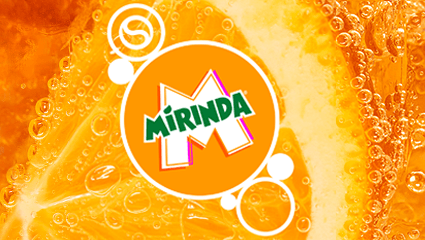
gazuj, miksuj, smakuj po swojemu!
Mirinda Zero Cukru,
440ml
Pozwól, by znajoma, cytrusowa świeżość umiliła Ci kazdą chwilę i przyniosła przyjemne orzeźwienie. Syrop Sodastream® Mirinda Zero Cukru zachwyca soczystą pomarańczową nutą, która naturalnie pobudza zmysły. To dobrze znany smak w zaskakująco lekkiej odsłonie - teraz bez dodatku cukru
Sodastream® Mirinda Zero Cukru -
pełnia orzeźwienia, bez zbędnych kalorii!
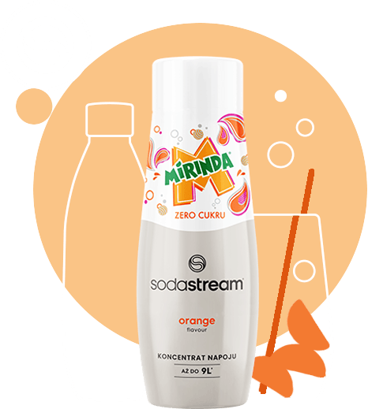
syrop Sodastream® Mirinda Zero Cukru to idealna propozycja dla...
Dla wszystkich, którzy chcą się cieszyć słodyczą bez kompromisów
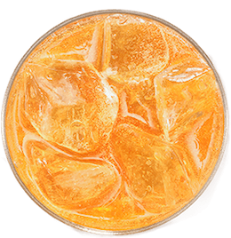
Fanów owocowego orzeźwienia
Entuzjastów eko-nawyków, otwartych na nowe rozwiązania
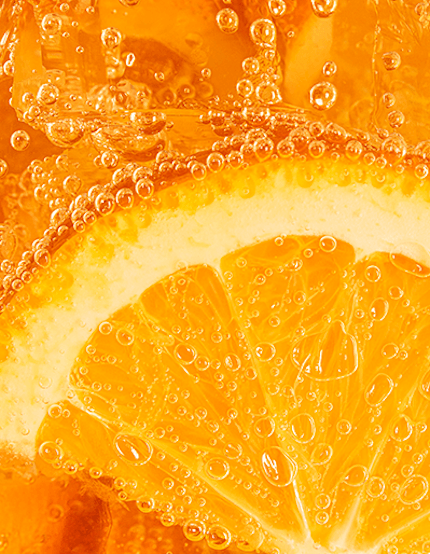
gazuj
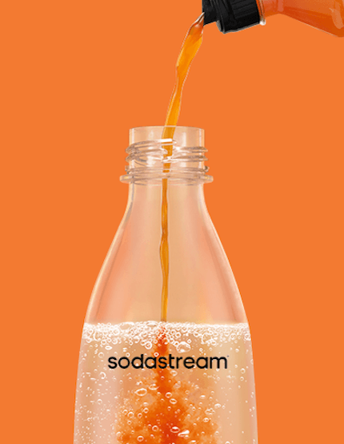
miksuj
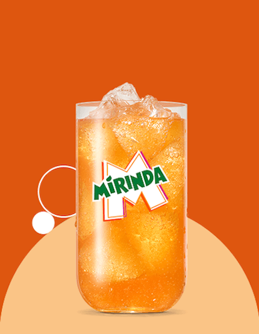
smakuj
Gazuj. Miksuj. Smakuj.
Odtwórz ulubiony napój gazowany w zaciszu własnego domu! Zabqbelkuj wodę i dodaj syrop Sodastream® Mirinda Zero Cukru. Gazowany klasyk sprawdzi się solo lub jako baza do orzeźwiającego mokłajlu.
Pomarańczowe orzeźwienie, kiedy tylko chcesz
Stwórz swój ulubiony napój gazowany* w 3 prostych krokach:

Nagazuj schłodzoną wodę tak, jak lubisz - delikatnie lub intensywnie

Odmierz syrop według wskazówek na opakowaniu lub do drugiej linii umieszczonej na butelce. Masz ochote na intensywniejszy smak? Dodaj go trochę więcej!

Przelej przygotowany napój do szklanki i uzupełnij! wybranymi dodatkami -kostkami lodu, plastrami cytrusów i delektuj się smakiem!
*PAMIĘTAJ! Jedynie saturator Sodastream® MIX° umożliwia gazowanie soków, koktajli i wody z dodatkami.
Jeśli używasz innego modelu Sodastream®, korzystaj jedynie z czystej wody, a ulubione owoce lub syrop Sodastream® dodaj później.
więcej bąbelków
- realna
oszczędność
Jedna butelka syropu Sodastream® Mirinda
Zero Cukru o pojemności 440 ml
pozwala przygotować nawet 9l
kultowego napoju!
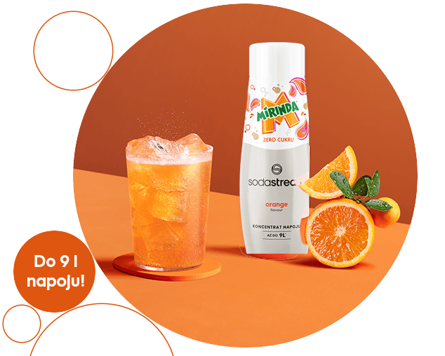
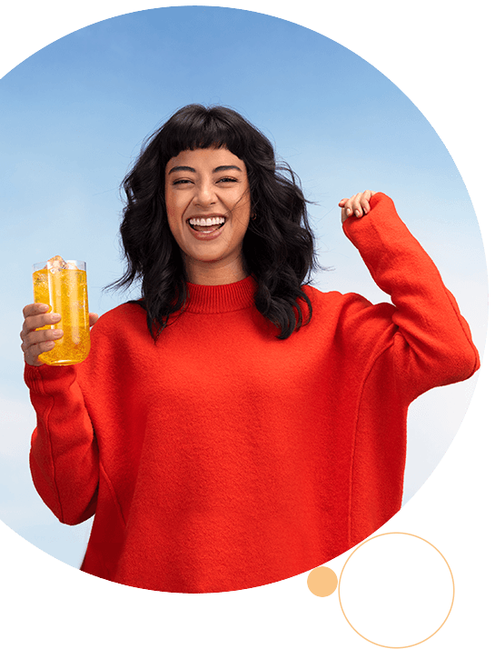
Bąbelkowe orzeźwienie
bez cukru
Odkryj możliwości jakie stwarza syrop Sodastream® Mirinda Zero Cukru! Odtwórz klasyczny napój lub eksperymentuj z dodatkami, tworząc własną wersję kultowego napoju. Co wybierzesz tym razem?
Cytrusowe pobudzenie:
Do schłodzonej, nagazowanej wody gazowanej dodaj syrop Sodastream® Mirinda Zero Cukru, lód oraz plasterek cytryny, aby rozpocząć dzień z rześkim akcentem.
Tropikalny mix:
Połącz napój przygotowany na bazie syropu Sodastream® Mirinda Zero Cukru z sokiem ananasowym i kruszonym lodem. Zamieszaj dokładnie, udekoruj plasterkami kiwi i gotowe.
Wieczorny, orzeźwiający moktajl:
Podkręć smak napoju przygotowanego na bazie syropu Sodastream® Mirinda Zero Cukru wybranymi owocami i ziołami - dodaj plasterki pomarańczy lub grejpfruta, udekoruj szklankę świeżą bazylią i zaskocz swoich gość! cytrusowym orzeźwieniem!
Dowiedz się więcej o urządzeniach Sodastream®
Jak działa saturator Sodastream®?
To proste! Wystarczy zamontować cylinder CO₂, oraz butelkę z chłodną wodą do saturatora i jednym ruchem przycisku lub dźwigni dodać do niej bąbelki. Saturatory Sodastream® nie potrzebują podłączenia do prądu - wykorzystują moc dwutlenku węgla, dzięki czemu świeża, gazowana woda jest zawsze na wyciągnięcie reki.
Jaką wodę można nagazować w saturatorze Sodastream®?
W saturatorach Sodastream® możesz nasycić bąbelkami czystą, chłodną wodę bez dodatków - możesz wykorzystać świeżą wodę z kranu lub wcześniej ją przefiltrować. Jeśli masz ochotę nasycić bąbelkami wodę z dodatkami, np. syropem, odpowiednim wyborem będzie saturator Sodastream® Mix. W tym modelu możesz gazować nie tylko wodę, ale także soki czy koktajle - bezpośrednio w butelce.
Jak nagazować wodę przy użyciu saturatora Sodastream®?
Dzięki Sodastream" możesz nagazować wodę według własnych preferencji. W zależności od modelu saturatra, naciśnij przycisk lub dźwignię i dobierz poziom bąbelków:
1-2 przyciśnięcia - woda lekko gazowana,
3-4 przyciśnięcia - woda średnio gazowana,
5-6 przyciśnięć - mocny gaz.
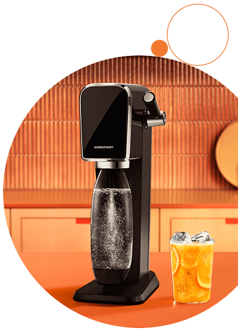
Bąbelkowe orzeźwienie - takie jak lubisz!
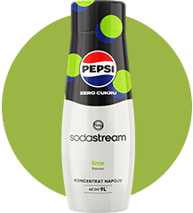
dla fanów znanych smaków
Pepsi, Pepsi Lime Zero Cukru, Mirinda, 7UP i Lipton Ice Tea Lemon to popularne smaki dla fanów kultowych napojów gazowanych. Teraz możesz odtworzyć je w swoim domu i cieszyc się wyjątkowym orzeźwieniem, kiedy tylko masz ochotę.
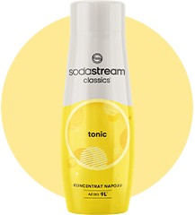
ponadczasowa klasyka
Sodastream® Cola, Tonic i Xtreme Energy to klasyczne propozycje, które nigdy nie wychodzą z mody. Odtwarzaj z nimi dobrze znane smaki albo baw się smakiem i przygotuj je w zupełnie innej odsłonie!
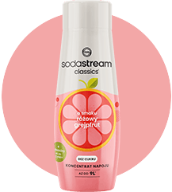
owocowe szaleństwo
Masz ochotę na owocowe orzeźwienie? Spróbuj intensywnie owocowych syropów Sodastream® o smaku Malinowym, Lemoniady, Marakui lub Owoców Lesnych! Przygotuj na ich bazie pyszne lemoniady i ciesz sie owocowa słodyczą bez dodatku cukru!
#drinkbetter